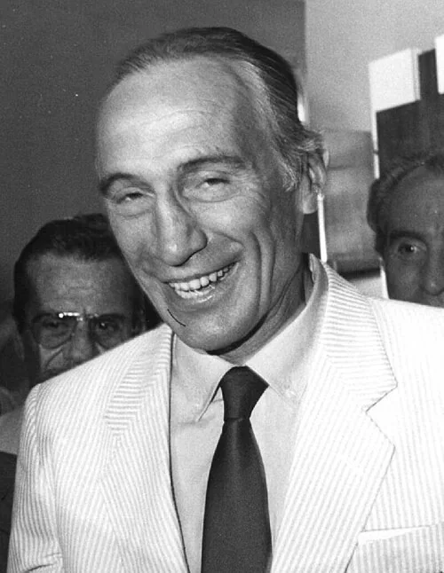

Photo source ↗Presidenza della Repubblica · Attribution
The profile
Enzo Bearzot
Enzo Bearzot was an Italian coach who led the national team across three World Cups. He placed trust in a settled group even when results brought pressure.
Bearzot moved from club football into the Italian national-team setup. As head coach, he trusted an established group and kept faith with Paolo Rossi despite criticism before the 1982 tournament.
Bearzot guided Italy to the 1982 title. After a slow group stage, his team beat Argentina, Brazil, Poland and West Germany, winning the final 3–1.
1982Spain
Champion
Group A Poland0 : 0Italy
Polandhome
Starting lineup
- Jozef MLYNARCZYK
- Pawel JANAS
- Jan JALOCHA
- Wladyslaw ZMUDA
- Stefan MAJEWSKI
- Waldemar MATYSIK
- Andrzej BUNCOL
- Wlodimierz SMOLAREK
- Grzegorz LATO
- Andrzej IWAN
- Zbigniew BONIEK
Substitutions
- 72′Marek KUSTO on · Andrzej IWAN off
Italyaway
Starting lineup
- Dino ZOFF
- Antonio CABRINI
- Fulvio COLLOVATI
- Claudio GENTILE
- Gaetano SCIREA
- Giancarlo ANTOGNONI
- Giampiero MARINI
- Marco TARDELLI
- Bruno CONTI
- Francesco GRAZIANI
- Paolo ROSSI
Substitutions
- No substitutions
Group A Italy1 : 1Peru
- Bruno CONTI18′
- Ruben DIAZ83′
Italyhome
Starting lineup
- Dino ZOFF
- Antonio CABRINI
- Fulvio COLLOVATI
- Claudio GENTILE
- Gaetano SCIREA
- Giancarlo ANTOGNONI
- Giampiero MARINI
- Marco TARDELLI
- Bruno CONTI
- Francesco GRAZIANI
- Paolo ROSSI
Substitutions
- 45+1′Franco CAUSIO on · Paolo ROSSI off
Peruaway
Starting lineup
- Ramon QUIROGA
- Jaime DUARTE
- Rafael SALGUERO
- Ruben DIAZ
- Jorge OLAECHEA
- Jose VELASQUEZ
- Cesar CUETO
- Julio Cesar URIBE
- Teofilo CUBILLAS
- Geronimo BARBADILLO
- Juan Carlos OBLITAS
Substitutions
- 65′German LEGUIA on · Geronimo BARBADILLO off
- 65′Guillermo LA ROSA on · Julio Cesar URIBE off
Group A Italy1 : 1Cameroon
- Francesco GRAZIANI60′
- Gregoire MBIDA61′
Italyhome
Starting lineup
- Dino ZOFF
- Antonio CABRINI
- Fulvio COLLOVATI
- Claudio GENTILE
- Gaetano SCIREA
- Giancarlo ANTOGNONI
- Gabriele ORIALI
- Marco TARDELLI
- Bruno CONTI
- Francesco GRAZIANI
- Paolo ROSSI
Substitutions
- No substitutions
Cameroonaway
Starting lineup
- Thomas NKONO
- Michel KAHAM
- Rene NDJEYA
- Jean ONANA
- Emmanuel KUNDE
- Ephrem MBOM
- Ibrahim AOUDOU
- Gregoire MBIDA
- Theophile ABEGA
- Roger MILLA
- Jean Pierre TOKOTO
Substitutions
- No substitutions
Second-phase Group 3 Italy2 : 1Argentina
- Marco TARDELLI57′
- Antonio CABRINI67′
- Daniel PASSARELLA83′
Italyhome
Starting lineup
- Dino ZOFF
- Antonio CABRINI
- Fulvio COLLOVATI
- Claudio GENTILE
- Gaetano SCIREA
- Giancarlo ANTOGNONI
- Gabriele ORIALI
- Marco TARDELLI
- Bruno CONTI
- Francesco GRAZIANI
- Paolo ROSSI
Substitutions
- 75′Giampiero MARINI on · Gabriele ORIALI off
- 80′Alessandro ALTOBELLI on · Paolo ROSSI off
Argentinaaway
Starting lineup
- Ubaldo FILLOL
- Luis GALVAN
- Jorge OLGUIN
- Daniel PASSARELLA
- Alberto TARANTINI
- Osvaldo ARDILES
- Americo GALLEGO
- Diego MARADONA
- Daniel BERTONI
- Ramon DIAZ
- Mario KEMPES
Substitutions
- 58′Gabriel CALDERON on · Mario KEMPES off
- 58′Jose VALENCIA on · Ramon DIAZ off
Second-phase Group 3 Italy3 : 2Brazil
- Paolo ROSSI5′
- Paolo ROSSI25′
- Paolo ROSSI74′
- SOCRATES12′
- FALCAO68′
Italyhome
Starting lineup
- Dino ZOFF
- Antonio CABRINI
- Fulvio COLLOVATI
- Claudio GENTILE
- Gaetano SCIREA
- Giancarlo ANTOGNONI
- Gabriele ORIALI
- Marco TARDELLI
- Bruno CONTI
- Francesco GRAZIANI
- Paolo ROSSI
Substitutions
- 34′Giuseppe BERGOMI on · Fulvio COLLOVATI off
- 75′Giampiero MARINI on · Marco TARDELLI off
Brazilaway
Starting lineup
- WALDIR PERES
- LEANDRO
- OSCAR
- LUIZINHO
- JUNIOR
- TONINHO CEREZO
- SOCRATES
- ZICO
- EDER
- FALCAO
- SERGINHO
Substitutions
- 69′PAULO ISIDORO on · SERGINHO off
Semifinal Italy2 : 0Poland
- Paolo ROSSI22′
- Paolo ROSSI73′
Italyhome
Starting lineup
- Dino ZOFF
- Giuseppe BERGOMI
- Antonio CABRINI
- Fulvio COLLOVATI
- Gaetano SCIREA
- Giancarlo ANTOGNONI
- Gabriele ORIALI
- Marco TARDELLI
- Bruno CONTI
- Francesco GRAZIANI
- Paolo ROSSI
Substitutions
- 28′Giampiero MARINI on · Giancarlo ANTOGNONI off
- 70′Alessandro ALTOBELLI on · Francesco GRAZIANI off
Polandaway
Starting lineup
- Jozef MLYNARCZYK
- Marek DZIUBA
- Janusz KUPCEWICZ
- Pawel JANAS
- Wladyslaw ZMUDA
- Stefan MAJEWSKI
- Waldemar MATYSIK
- Andrzej BUNCOL
- Wlodzimierz CIOLEK
- Wlodimierz SMOLAREK
- Grzegorz LATO
Substitutions
- 45+1′Andrzej PALASZ on · Wlodzimierz CIOLEK off
- 77′Marek KUSTO on · Wlodimierz SMOLAREK off
Final Italy3 : 1West Germany
- Paolo ROSSI57′
- Marco TARDELLI69′
- Alessandro ALTOBELLI81′
- Paul BREITNER83′
Italyhome
Starting lineup
- Dino ZOFF
- Giuseppe BERGOMI
- Antonio CABRINI
- Fulvio COLLOVATI
- Claudio GENTILE
- Gaetano SCIREA
- Gabriele ORIALI
- Marco TARDELLI
- Bruno CONTI
- Francesco GRAZIANI
- Paolo ROSSI
Substitutions
- 7′Alessandro ALTOBELLI on · Francesco GRAZIANI off
- 89′Franco CAUSIO on · Alessandro ALTOBELLI off
West Germanyaway
Starting lineup
- Harald SCHUMACHER
- Hans Peter BRIEGEL
- Karlheinz FOERSTER
- Bernd FOERSTER
- Uli STIELIKE
- Manfred KALTZ
- Paul BREITNER
- Wolfgang DREMMLER
- Pierre LITTBARSKI
- Klaus FISCHER
- Karl-Heinz RUMMENIGGE
Substitutions
- 62′Horst HRUBESCH on · Wolfgang DREMMLER off
- 70′Hansi MUELLER on · Karl-Heinz RUMMENIGGE off